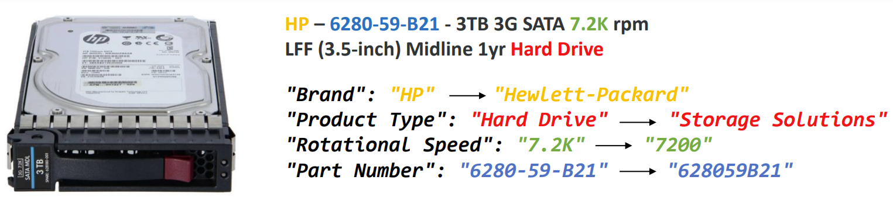
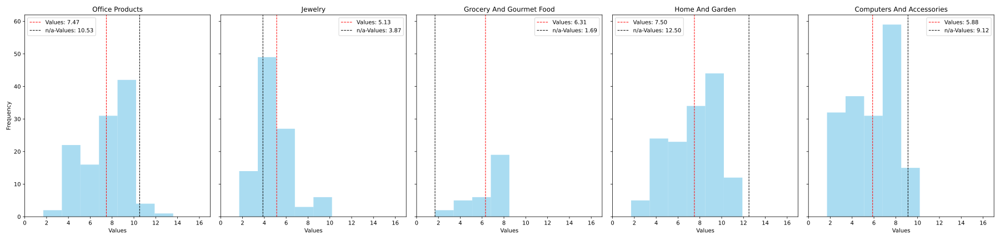

This page describes the Web Data Commons Product Attribute-Value Extraction Benchmark (WDC PAVE) for evaluating the performance of information extraction and data normalization methods. The benchmark consists of 1420 product offers that are annotated with 24,582 attribute-value pairs in (i) their surface format and (ii) in normalized format.
1. Motivation
In the rapidly evolving e-commerce landscape, the extraction of attribute-value pairs from product titles and descriptions is a necessity for faceted search and filtering, demand prediction, recommendation systems, and product analysis (Jaimovitch-López et al. (2023)).
Recent shifts in the research domain underscore a transition from pre-trained language models (PLMs), such as BERT, to the cutting-edge capabilities of Large Language Models (LLMs) like OpenAI's GPT series. LLMs,
such as GPT-3.5 and GPT-4, represent a significant advancement in various applications of information extraction (see, e.g. Agrawal et al. (2022), Brinkmann et al. (2023), Shyr et al. (2023)),
requiring a minimal amount of labeled data to generalize across attribute-value pairs that have not been seen during training.
Furthermore, LLMs have been found to have the inherent ability to perform complex data normalization tasks, ranging from basic wrangling to domain-specific operations (Jaimovitch-López et al., 2023).
Figure 1: Sample product title showcasing labeled attributes and their corresponding normalized values

Despite these advancements, one challenge persists: the scarcity of annotated product datasets for evaluating and refining attribute-value extraction techniques.
This gap hinders the development and testing of models capable of meeting the demands of e-commerce platforms.
Addressing this need, we introduce the Web Data Commons Product Attribute-Value Extraction (WDC PAVE) benchmark.
The data comprises 1,420 human-annotated product offers, drawn from an array of 87 websites using the schema.org vocabulary,
featuring over 24,583 manually verified attribute-value pairs.
WDC PAVE is designed to support both extraction and normalization tasks, with annotations available for direct attribute-value extraction and for scenarios requiring normalization,
such as name expansion, string wrangling, unit of measurement normalization, and generalization. An example of this is showcased in Figure 1.
By making the WDC PAVE benchmark publicly available, we aim to provide researchers with a new benchmark that supports the advancement of product attribute-value extraction techniques.
2. Benchmark Creation
2.1 Web Data Commons Large-Scale Product Matching Data
The WDC initative harvests structured information from the Common Crawl, which
stands as the most extensive publicly accessible web corpus. The extracted data is
then made available for public download, aimed at assisting both researchers and
enterprises in leveraging the vast repository of data present on the web. The Web Data Commons Large-Scale Product Matching (WDC LSPM)
corpus comprises over 26 million product offers collected from approximately 79,000 websites. The corpus was initially developed for the purpose
of assessing product matching techniques, categorizing the offers into 16 million
product clusters. Each cluster consolidates offers pertaining to the same product by employing product identifiers for organization.
Besides product titles, descriptions and product category annotations, about 17% of the corpus features HTML specification table content of
the product's website, as well as key-value pairs that are extracted from
these tables using a table detection heuristic (Primpeli et al. 2019).
These key-value pairs build the foundation for the WCD PAVE datasets.
2.2 Data Preprocessing and Selection
In light of the noisy nature of web data, we perform a series of cleansing and filtering steps upon creating the dataset.
Initially, product offers that are missing titles, descriptions, or key-value pairs from specification tables are excluded.
To reduce the presence of noisy text,
products whose descriptions exceed 1,000 characters are also discarded.
Furthermore, HTML and language tags are stripped from the titles and descriptions.
We retain only product texts that are in English.
The WDC Product Data Corpus organizes offers into clusters of products. To gather a diverse set of unique attribute-value pairs, the key-value pairs from all offers within a product cluster are merged before annotation.
This enrichment process guarantees that attribute-values from all
retailers are attributed to every product offer.
In this context, product offers that belong to clusters with fewer than two domains or have a cluster size smaller than two are excluded from the dataset.
The selection of the most appropriate categories for the WD PAVE dataset involved ranking product offer categories by their average cluster sizes and conducting a manual review of the product texts to exclude noisy categories.
Consequently, the categories chosen were "Computers And Accessories", "Jewelry", "Grocery And Gourmet Food", "Office Products", and "Home And Garden,".
To streamline the dataset, we analyzed and refined its attributes: Initially, we identified a range of attributes across all
categories, with each category having between 190 to 1,475 unique attributes. We noted that some attributes were functionally
equivalent despite different names, and others were irrelevant noise. To manage this diversity and avoid disproportionate attribute
loss across categories, we manually merged equivalent attributes and eliminated noise attributes.
To link product titles and descriptions with their respective attributes and values,
we employed a string-matching method to identify attribute-value pairs directly mentioned in
the product text. To simplify the annotation, we eliminated attributes if they had a matching
rate of less than 10% with the product text, simplifying the annotation.
Finally, we took a stratified sample by product category and the 'Product Type' attribute, which is consistent across all categories.
2.3 Data Annotation
Initially, offers from each product category were standardized by supplementing missing category-specific attributes, making sure that every product offer
is supplied with all applicable attributes from its respective category. String matching against product titles and descriptions using the existing category
attribute-values facilitated the identification of potential values for these attributes.
We established annotation guidelines for every single attribute, prioritizing complete spans over
incomplete ones and assigning a single attribute type to each span, with special attention to prevent overlap among attribute values or with unrelated text segments.
We annotated attributes with all relevant variations and expressions of values.
For annotation, we used a custom annotation tool, employing heuristics
to enhance annotation results, even for non-domain experts. It provides attribute names, suggested values (collected from all product offers of the respecitve cluster),
and context through example values and descriptions. The tool's design allows for iterative user validation. Attributes, whose value could not be found in title or description were set to "n/a".
In a second round of annotation we added attributes that were previously missing in the data. For unclear attributes, we researched products online.
2.4 Benchmark Statistics
Table 1 provides an overview of the WDC PAVE benchmark. It consists of 1,420 unique product
listings spread over five distinct categories, featuring a collective total of 70 different attributes.
Table 2 further delineates the dataset by category: "Computers and Accessories" are described by
15 unique attributes, "Home And Garden" by 20, "Office Products" by 18, "Grocery And Gourmet Food" by 8, and "Jewelry"
by 9. On average, each product has 6.51 attribute values matched to its title or description. This average
ranges from a low of 5.18 values in "Jewelry" to a high of 7.52 values in "Home And Garden".
Figure 2 illustrates the distribution of matching values across the five categories.
Notably, the dataset features an average of 8.91 n/a-values per product. The average number
of unique values per attribute is at 70.43, with a median of 41 and a maximum of 416 unique values for
a single attribute. Table 3 summarizes the number of unique values and the share of n/a-values per attribute in further detail.
Table 1: Properties of the WDC PAVE Benchmark
Property
Value
Number of Product Offers
1,420
Number of Unique Categories
5
Number of Unique Category-Attributes
70
Average Number of Values per Product
6.51
Average Number of n/a-Values per Product
8.91
Average Number of Unique Values per Attribute
70.43
Median Number of Unique Values per Attribute
41
Maximum Number of Unique Values per Attribute
416
Number of annotated attribute-values
24,582
Of which are n/a
51.45%
Number of annotated attributes
21,904
Of which are n/a
57.74%
Number of Unique Values
5,565
Table 2: Category-Specific Properties of the WDC PAVE Benchmark
Category
Number of Unique Source URLs
Number of Unique Attributes
Number of Product Offers
Number of Annotated Attribute-Values
Number of Unique Values
Of which have value
Of which are n/a
Average Number of Attribute-Value Pairs Per Product Offer
Average Number of n/a-Values Per Product Offer
Average Number of Unique Values per Attribute
Home And Garden
19
20
356
7,854
1,680
43.44%
56.56%
7.52
12.48
74.25
Computers And Accessories
13
15
436
7,492
1,161
47.2%
52.8%
5.92
9.07
69.33
Grocery And Gourmet Food
20
8
81
814
441
78.73%
21.27%
5.85
2.14
47.12
Office Products
12
18
297
5,942
1,885
47.5%
52.5%
7.49
10.50
90.89
Jewelry
23
9
250
2,481
398
61.51%
38.49%
5.18
3.82
43.56
Figure 2: Distribution of Values across Categories

Table 3: Overview of Attributes
Category
Attribute
Unique Values Count
Share of n/a-values
Computers And Accessories
Manufacturer
31
2.37
Generation
38
51.05
Part Number
438
0.87
Capacity
116
29.49
Product Type
236
3.96
Interface
62
28.64
Cache
34
83.07
Ports
21
68.73
Processor Core
13
90.62
Processor Type
77
77.02
Processor Quantity
6
92.43
Bus Speed
5
98.17
Thermal Design Power
14
92.2
Clock Speed
58
76.64
Rotational Speed
12
56.39
Home And Garden
Manufacturer
111
0
Product Type
379
0
Width
95
32.28
Length
80
55.36
Depth
48
74.59
Gauge
10
75.14
Material
131
12.64
Stainless Steel Series
7
75.56
Cooling
19
90.46
Splash
34
77.78
Shape
43
77.24
Height
84
63.91
Color
74
57.25
Retail UPC
29
92.13
Manufacturer Stock Number
332
9.32
Heat
12
84.35
Shelves
8
91.57
Base
20
74.62
Voltage
14
89.39
Capacity
148
59.85
Office Products
Product Type
373
0
Brand
118
0.31
Color(s)
118
9.28
Retail UPC
136
54.55
Manufacturer Stock Number
296
1.34
Pack Quantity
189
33.78
Material
158
27.34
Width
117
34.95
Height
99
46.25
Mounting
30
88.82
Length
30
89.97
Binding
48
82.52
Closure
23
87.66
Depth
37
87.09
Paper Weight
25
90.67
Sheet Perforation
8
95.3
Capacity
58
80.51
Page Yield
21
92.74
Grocery And Gourmet Food
Brand
51
0
Product Type
95
0
Packing Type
47
16.54
Flavor
57
32.99
Size/Weight
52
25.56
Pack Quantity
44
29.89
Manufacturer Stock Number
64
24.1
Retail UPC
31
62.96
Jewelry
Product Type
61
0
Gender
7
39.57
Stones Type
11
69.58
Stone Shape
15
74.8
Stones Setting
17
72.4
Metal Type
29
15.04
Stones Total Weight
6
95.6
Brand
14
0
Model Number
238
5.95
2.5 Normalized Benchmark
In order to test LLMs' capabilities of extracting and normalizing attribute values, we applied four kinds of custom normalizations.
These are summarized in Table 4.
Among the 70 attributes in WDC PAVE, we identified 37 attributes suitable for normalization:
For the normalization of the attribute values, we identified the following four operations: name expansion, generalisation, unit of measurement normalizations, and string wrangling.
Table 4 illustrates the normalization operations with examples for all attributes.
Each attribute that must be normalized is assigned to one of the normalization operations.
To normalize the attribute values of the 37 attributes, we implemented custom functions and afterwards manually verified the normalized attribute values. Regarding the Product Type attribute, items within the Computers and Accessories category
are divided into nine categories. Similarly, products related to Home and Garden are sorted into eleven categories, Office Products into twelve, Grocery and Gourmet Foods into six, and Jewelry items into five categories. Colors are divided into 13 color types, the Processor Type is divided into three series.
We make both the extracted attribute values and the extracted and normalized attribute values available to enable the evaluation of both scenarios: (i) extraction and (ii) extraction with normalization.
Table 4: Overview of Attribute Value Normalization Tasks in WDC PAVE
Task Description
Category
Attributes
Goal
Examples
Name Expansion
Computers
Manufacturer
Generation Capacity, Cache
Expand Manufacturer Names if supplied in abbreviated format.
Expand technology generations, DDR memory versions, tape technology versions if supplied in abbreviated format. Expand unit abbreviations.
Convert and standardize dimensions (h,w,l,d) measurement to centimeters, rounded to one decimal place, without unit identifier.
Convert and standardize the Paper Weight to kg, rounded to two decimal places, without unit identifier. Convert and standardize the Size/weight to g, rounded to full digits, without unit identifier. Convert the Rotational Speed value to a single, full numeric value.
Remove non-alphanumeric chracters from identifiers. Convert implied numbers to numeric equivalents.
Extract Pack Quantity as a single numeric value. Extract the Manufacturer Code from the UPC (The Manufacturer Code is the 2-6 digit of the UPC) Uppercase all Brand names.
In our study, we assessed the efficiency of various prompt templates in extracting attribute-value pairs
from product descriptions within the WDC PAVE benchmark, using GPT-3.5 and GPT-4.
Our experimental framework incorporates up to six chat message components, including a
role description for the LLM, specifying its function and a target schema, represented in JSON format, to delineate the expected attribute-value pairs.
Task instructions were explicitly defined, directing the extraction and normalization of
attribute values from product titles and descriptions, utilizing a structured approach for input processing and output generation in JSON
format. Our methodology also included demonstration tasks with semantically similar product offers from the training set to enhance the model's
learning, ensuring a comprehensive evaluation of the prompt templates with example values and prompt templates with example values and demonstrations.
For an in-depth explanation of our methodology, please refer to our paper.
Table 5 shows the results for the extraction scenario: With the introduction of ten example values, both models demonstrate commendable F1-scores,
approximately 80%. GPT-4 reaches a peak F1-score of 91% with ten demonstrations,
marking a notable advancement over GPT-3.5.
In scenarios involving attribute-value normalization, GPT-4 exhibites superior capabilities, benefiting from prompt templates containing normalized example values, reaching an F1-Score of 86%, and prompt templates containing normalized example values and demonstrations, reaching an F1-Score of 91%, as shown in Table 6.
Detailed analysis of normalization operations shows that GPT-4's performs best in name expansion and string wrangling, achieving F1-scores as high as 98% and 95%, respectively. In line with prior research, normalization tasks that require reasoning
such as the generalization of attribute values or performing calculations, such as the unit of measurement normalization, are most challenging for both GPT-3.5 and GPT-4.
Table 5: F1-scores for the Extraction Scenario.
10 Example Values
10 Example Values + Demonstrations
LLM
0 val.
3 val.
5 val.
10 val.
3 dem.
5 dem.
10 dem.
GPT-3.5
70.61
76.46
77.06
79.37
87.17
87.42
87.91
GPT-4
74.40
78.57
78.96
80.70
88.94
88.87
90.54
Table 6: F1-scores for the extraction with normalization scenario.
Example Values
10 Example Values + Demonstrations
LLM
0-val
3-val
5-val
10-val
3-dem
5-dem
10-dem
GPT-3.5
68.86
69.75
69.91
69.36
85.45
86.04
84.49
GPT-4
74.19
83.77
84.90
85.60
91.18
91.32
91.31
Table 7: F1-scores by Normalization Operation.
Normalization Operation
GPT-3.5
GPT-4
0 val.
10 val.
10 val. 10 dem.
0 val.
10 val.
10 val. 10 dem.
Name Expansion
41.61
42.15
94.50
48.64
96.50
98.27
Generalisation
75.27
76.63
82.16
76.48
79.82
88.56
Unit of Measurement Norm.
51.16
47.64
76.24
61.76
66.42
83.50
String Wrangling
87.07
83.78
93.37
92.41
93.60
95.19
3. Download
The WDC PAVE Extraction Benchmark is available here
.
The WDC PAVE Extraction and Normalization Benchmark is available here
.
The datasets are structured in the JSON Lines (JSONL) format, supplementing each product with a set of attributes and values. Each entry in the dataset corresponds to a single product offer and includes several key fields:
id: The unique WDC product offer identifier.
cluster_id: The WDC cluster identifier that groups offers referring to the same product.
category: The product category, e.g. "Computers and Accessories
input_title: The product title as it appears on the source website, e.g. "435952-B21 HP Xeon E5335 2.0GHz DL360 G5"
input_description: The product description as it appears on the source website, e.g. "Intel Xeon E5335 DL360 G5(2.0GHz/4-core/8MB-2x4MB/80W)Full Processor Option KitPart Number(s) Part# 435952-B21 Spare 437948-001 Assembly 437426-001"
target_scores: A structured object detailing the annotated attributes of the product. Each attribute is associated with:
pid: An array indicating whether the attribute value appears in the title (0) and/or description (1).
Agrawal, M., Hegselmann, S., Lang, H., et al. (2022). Large language models are
few-shot clinical information extractors. In: Proceedings of the 2022 Conference
on Empirical Methods in Natural Language Processing. pp. 1998–2022.
Brinkmann, A., Shraga, R., Bizer, C. (2023). Product Attribute Value Extraction
using Large Language Models. arXiv preprint arXiv:2310.12537.
Jaimovitch-López, Gonzalo; Ferri, Cèsar; Hernández-Orallo, José; and others. (2023).
Can language models automate data wrangling?. In Machine Learning,
volume 112, number 6, pages 2053–2082. Springer.
Primpeli, Anna, Peeters, Ralph, and Bizer, Christian. (2019). The WDC Training Dataset and Gold Standard for Large-Scale Product Matching. In Companion Proceedings of The 2019 World Wide Web Conference, pages 381–386.
Shyr, C., Hu, Y., Harris, P.A., et al. (2023). Identifying and extracting rare disease
phenotypes with large language models. arXiv preprint arXiv:2306.12656.